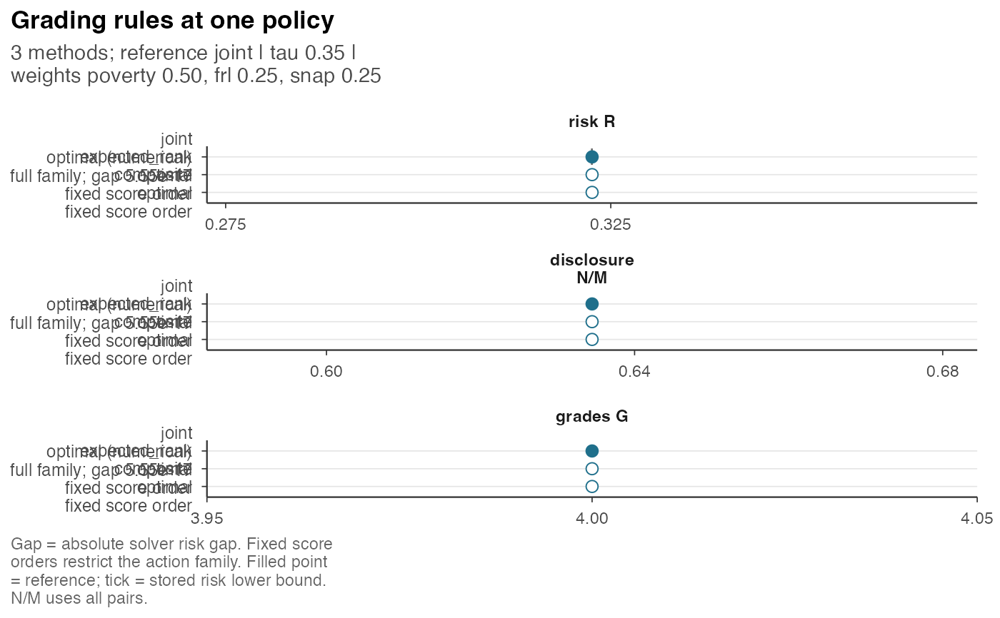
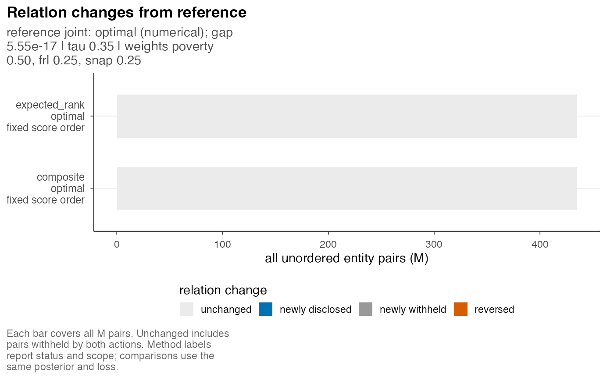

Plot Grading Rules Evaluated Under the Same Loss
postrank_plot_compare.Rdpostrank_plot_compare() plots stored grading rules from
postrank_compare() side by side on risk, disclosure rate (N / M), and
grade count (G), or by pairwise relation changes relative to the reference
rule. All risk values come from x's shared posterior and loss settings
without solving or evaluating new gradings.
Usage
postrank_plot_compare(x, view = c("summary", "relations"), ..., ncol = NULL)Arguments
- x
A
postrank_comparisonfrompostrank_compare().- view
"summary"(the default) for risk, disclosure, and grade-count panels, or"relations"for stacked counts of pairwise relation changes fromx$referenceto each other rule.- ...
Unused; unnamed extra arguments are ignored. Pass
ncolby name.- ncol
Positive integer number of facet columns in
view = "summary", orNULL(the default, which uses 3 columns). Usencol = 1for narrow pages. Ignored whenview = "relations".
Value
A ggplot object. Rules without a finite risk (!is.finite(risk))
keep their y-axis labels, statuses, and reasons in the subtitle while their
points and bars are omitted. When view = "relations" and no compared rule
has grades, returns an empty status ggplot stating why.
Details
In view = "summary", the reference rule (x$reference) is drawn as a
filled circle and other rules as hollow circles; a vertical tick marks any
stored risk_lower_bound. Y-axis labels show the rule name, solver status
("optimal (numerical)" for full-family optimal solves), optimization scope
("full family", "fixed score order", or "supplied action"), and any
absolute solver risk gap. A score-order baseline searches only contiguous
cuts of its fixed score order rather than all gradings, so it has no
full-family lower bound.
In view = "relations", each bar covers all M = choose(n, 2) unordered
pairs across "unchanged", "newly disclosed", "newly withheld", and
"reversed" relative to x$reference; "unchanged" includes pairs left
unordered by both rules.
Rules recorded with family_feasible == FALSE (for example, exceeding
G_max or violating an error budget q_k) are tagged "[outside family]"
on the y-axis and listed in the subtitle: their fixed-action risks are
evaluated under the same loss, but they are outside the constrained feasible
set. If family_feasible is absent from an older comparison object, the
subtitle notes that constraint checks require rebuilding x with
postrank_compare().
Examples
comparison <- postrank_example("comparison_30x3_tau35")
postrank_plot_compare(comparison, ncol = 1)

Open full-size figure
postrank_plot_compare(comparison, view = "relations")

Open full-size figure